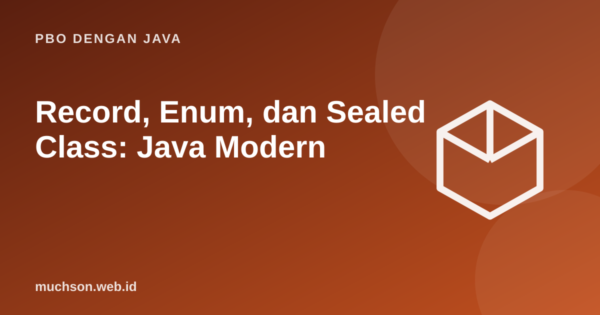

Beranda › Artikel › PBO dengan Java
PBO dengan JavaRecord, Enum, dan Sealed Class: Java Modern
Java telah banyak berubah. Record menghilangkan kode berulang untuk class pembawa data, enum menyatakan himpunan nilai tetap, dan sealed class dengan pattern matching memungkinkan kompiler memastikan Anda sudah menangani semua kasus.
Sebaiknya sudah paham: class dan interface, polimorfisme

Tujuan belajar
Setelah membaca dan mencoba materi ini, Anda mampu:
- membuat record dan menjelaskan apa yang dihasilkan otomatis
- memakai enum dengan atribut dan method
- membatasi hierarki dengan sealed class/interface
- memakai switch dengan pattern matching yang eksak
- memilih antara class biasa, record, dan enum
Record: data tanpa seremonial
record Titik(int x, int y) {
Titik { // konstruktor kompak: validasi
if (x < 0 || y < 0) throw new IllegalArgumentException("koordinat negatif");
}
double jarakKeAsal() { return Math.sqrt(x * x + y * y); }
}
public class Main {
public static void main(String[] args) {
Titik p = new Titik(3, 4);
System.out.println(p); // toString otomatis
System.out.println(p.x() + " " + p.y()); // accessor otomatis
System.out.println(p.equals(new Titik(3, 4))); // equals berdasarkan isi
System.out.println(p.hashCode() == new Titik(3, 4).hashCode());
System.out.println(p.jarakKeAsal());
try { new Titik(-1, 0); } catch (IllegalArgumentException e) { System.out.println(e.getMessage()); }
}
}Titik[x=3, y=4]
3 4
true
true
5.0
koordinat negatif
Enum: himpunan nilai tetap
enum Hari {
SENIN(true), SELASA(true), RABU(true), KAMIS(true), JUMAT(true), SABTU(false), MINGGU(false);
private final boolean kerja;
Hari(boolean kerja) { this.kerja = kerja; }
boolean hariKerja() { return kerja; }
}
enum Operasi {
TAMBAH("+") { double terapkan(double a, double b) { return a + b; } },
KALI("*") { double terapkan(double a, double b) { return a * b; } };
final String simbol;
Operasi(String simbol) { this.simbol = simbol; }
abstract double terapkan(double a, double b); // perilaku berbeda per konstanta
}
public class Main {
public static void main(String[] args) {
for (Hari h : Hari.values())
if (!h.hariKerja()) System.out.println(h + " (ordinal " + h.ordinal() + ")");
System.out.println(Hari.valueOf("RABU").hariKerja());
for (Operasi o : Operasi.values())
System.out.println("6 " + o.simbol + " 7 = " + o.terapkan(6, 7));
}
}SABTU (ordinal 5)
MINGGU (ordinal 6)
true
6 + 7 = 13.0
6 * 7 = 42.0
Sealed: hierarki yang tertutup
Sealed class atau interface menyatakan dengan tegas siapa saja yang boleh menjadi turunannya. Dipadukan dengan switch pattern matching, kompiler dapat memeriksa bahwa semua kasus tertangani tanpa default.
sealed interface Bentuk permits Lingkaran, Persegi, Segitiga { }
record Lingkaran(double r) implements Bentuk { }
record Persegi(double s) implements Bentuk { }
record Segitiga(double alas, double tinggi) implements Bentuk { }
public class Main {
static double luas(Bentuk b) {
return switch (b) { // tanpa default: kompiler memastikan lengkap
case Lingkaran l -> Math.PI * l.r() * l.r();
case Persegi p -> p.s() * p.s();
case Segitiga t -> 0.5 * t.alas() * t.tinggi();
};
}
public static void main(String[] args) {
for (Bentuk b : new Bentuk[]{ new Lingkaran(1), new Persegi(2), new Segitiga(3, 4) })
System.out.printf("%s -> %.2f%n", b, luas(b));
}
}Lingkaran[r=1.0] -> 3.14
Persegi[s=2.0] -> 4.00
Segitiga[alas=3.0, tinggi=4.0] -> 6.00
Deconstruction dan guard
record Titik(int x, int y) { }
sealed interface Ekspr permits Angka, Tambah, Kali { }
record Angka(int nilai) implements Ekspr { }
record Tambah(Ekspr kiri, Ekspr kanan) implements Ekspr { }
record Kali(Ekspr kiri, Ekspr kanan) implements Ekspr { }
public class Main {
static int hitung(Ekspr e) {
return switch (e) {
case Angka a -> a.nilai();
case Tambah(Ekspr k, Ekspr r) -> hitung(k) + hitung(r); // membongkar record
case Kali(Ekspr k, Ekspr r) -> hitung(k) * hitung(r);
};
}
static String kuadran(Object o) {
return switch (o) {
case Titik(int x, int y) when x > 0 && y > 0 -> "kuadran I";
case Titik(int x, int y) when x < 0 && y > 0 -> "kuadran II";
case Titik t -> "bukan kuadran I atau II";
default -> "bukan titik";
};
}
public static void main(String[] args) {
Ekspr e = new Tambah(new Angka(2), new Kali(new Angka(3), new Angka(4)));
System.out.println(hitung(e)); // 2 + 3 * 4
System.out.println(kuadran(new Titik(1, 2)) + ", " + kuadran(new Titik(-1, 2)) + ", " + kuadran("x"));
}
}14
kuadran I, kuadran II, bukan titik
| Kebutuhan | Pakai |
|---|---|
| Pembawa data immutable (DTO, nilai) | record |
| Himpunan nilai tetap dan terhingga | enum |
| Beberapa jenis tertutup dengan data berbeda | sealed interface + record |
| Objek dengan keadaan dan perilaku yang berubah | class biasa |
Latihan mandiriCoba kerjakan dulu sebelum membuka jawaban.
1. Ubah class Mahasiswa dengan nim dan nama menjadi record.
record Mahasiswa(String nim, String nama) { }2. Buat enum Level dengan nilai RENDAH, SEDANG, TINGGI dan method yang memetakan skor 0–100 ke Level.
Method static dengan if berdasarkan ambang batas.
3. Tambahkan Elips ke hierarki Bentuk. Apa yang terjadi pada switch luas() sebelumnya?
Gagal dikompilasi sampai kasus Elips ditambahkan.
4. Mengapa record tidak cocok untuk entitas yang berubah?
Record bersifat immutable; perubahan memerlukan pembuatan record baru.
Ringkasan
- Record: data immutable tanpa kode berulang.
- Enum: himpunan konstanta aman tipe dengan atribut dan perilaku.
- Sealed: hierarki tertutup; switch pola memeriksa kelengkapan.
- Pilih bentuk yang sesuai dengan sifat data.
Tanya jawab
Sejak versi Java berapa fitur ini tersedia?
Record resmi di Java 16, sealed di 17, dan switch pattern matching di 21.
Bisakah record mewarisi class?
Tidak (sudah mewarisi java.lang.Record), tetapi boleh mengimplementasikan interface.
Apakah record boleh berisi method tambahan?
Boleh, termasuk method static dan konstruktor tambahan.
Referensi
- dev.java: Records
- Oracle: Pattern Matching (Java Language Updates)
- Oracle: Enum Types (Java Tutorials)
- JEP 409: Sealed Classes